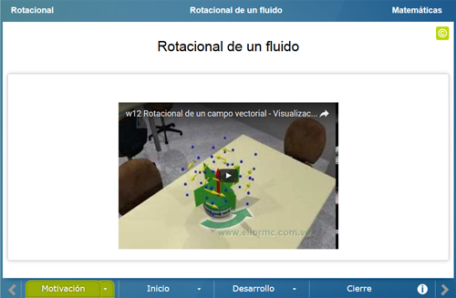
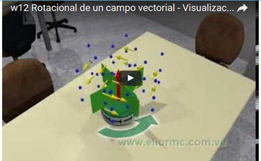
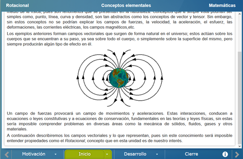
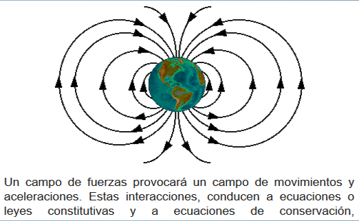
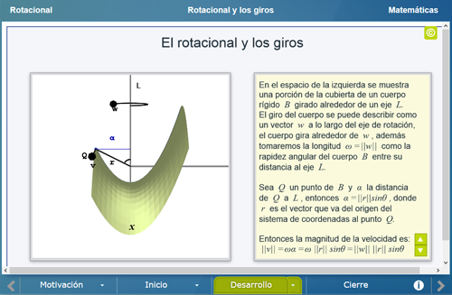
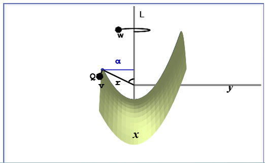
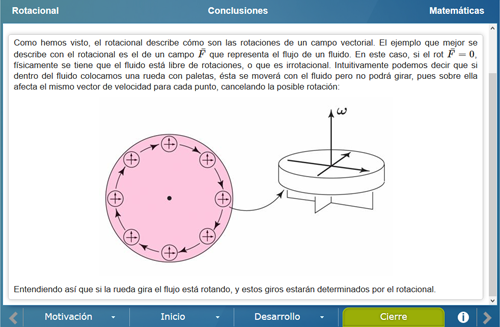
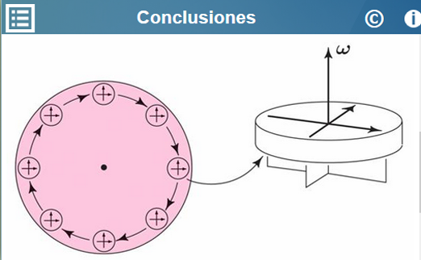

Rotacional
Rotacional
 Rotacional
Rotacional
Licenciatura: Matemáticas
Materia: Cálculo vectorial
Unidad: Rotacional
En cálculo vectorial, el operador rotacional, o rotor, es un operador vectorial que muestra cómo es la tendencia de un campo vectorial a inducir rotación alrededor de un punto. Este concepto es muy importante en diversas áreas, particularmente en la Física, por lo que en esta unidad se hace un análisis a detalle del concepto de rotacional y de cómo surge.
Se analiza el concepto de rotacional, su relación con el campo vectorial y su significado geométrico.
Se muestra un video en el cual se describe brevemente lo que es el rotacional y para qué sirve.


En la primer parte se dan los conceptos elementales y necesarios para poder entender lo que es el rotacional.


Aquí se muestra de forma geométrica lo que es un campo vectorial, a continuación se describe de forma algebraica y geométrica lo que es un rotacional.


Se describe como es el rotacional de un fluido y se muestra el significado del rotacional en el flujo de un fluido.


| Diseño del contenido | Víctor Hugo García Jarillo (Facultad de Ciencias UNAM, LITE) |
| Diseño funcional | Víctor Hugo García Jarillo (Facultad de Ciencias UNAM, LITE) |
| Programación | Víctor Hugo García Jarillo (Facultad de Ciencias UNAM, LITE) |
| Diseño gráfico | Ricardo López Gómez |
| Coordinación | Leticia Montserrat Vargas Rocha |
| Diseño funcional | Victor Hugo García Jarillo (Facultad de Ciencias, UNAM) |
| Programación | Victor Hugo García Jarillo (Facultad de Ciencias, UNAM) |
| Diseño gráfico | Francisco Varela Fuentes |
| Coordinación | Leticia Montserrat Vargas Rocha |
| Desarrollo del contenedor | Oscar Escamilla González |
Los contenidos de esta unidad didáctica interactiva están bajo una licencia Creative Commons Reconocimiento-NoComercial-CompartirIgual.
La unidad didáctica fue creada con Arquímedes, una herramienta de código abierto.
La unidad didáctica contiene escenas elaboradas con Descartes, una herramienta de código abierto.
LITE - UnADM 2014